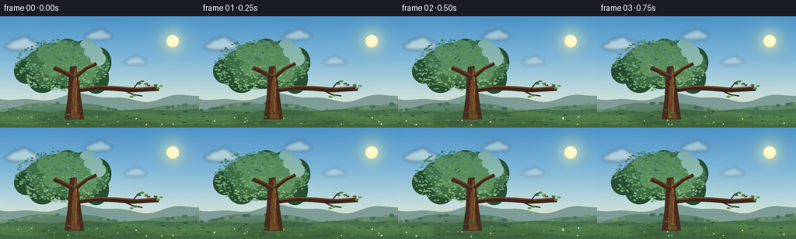
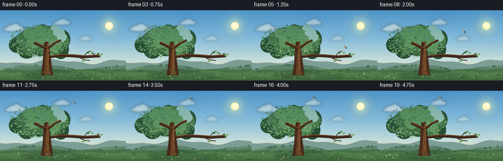

CODING AGENTS AS PIXEL WORLD MODELS
traex/DeepSeek-V4.1-Flash · dynamic_spatial_relationship_0049
点击播放 · 原生 RGB 像素
逐轮保存的候选
回放视频、检查图与代码变化。
每份候选均可单独播放。实际图片检查记录在下方工具轨迹中。
候选 01播放与检查图
点击播放 · 原生 RGB 像素


展开代码变化
--- 上一保存版本
+++ 本次保存版本
@@ -0,0 +1,595 @@
+from pathlib import Path
+import math
+
+import numpy as np
+from PIL import Image, ImageDraw, ImageFilter
+
+import artifact_io
+
+
+W, H = 256, 144
+FPS = 4
+FRAMES = 20
+S = 4
+SEED = 49
+CASE_DIR = Path(__file__).resolve().parent
+
+
+def _scaled_box(box):
+ return tuple(round(v * S) for v in box)
+
+
+def _scaled_points(points):
+ return [(round(x * S), round(y * S)) for x, y in points]
+
+
+def _scaled_width(width):
+ return max(1, round(width * S))
+
+
+def ellipse(draw, box, fill=None, outline=None, width=1):
+ draw.ellipse(
+ _scaled_box(box),
+ fill=fill,
+ outline=outline,
+ width=_scaled_width(width) if outline else 1,
+ )
+
+
+def polygon(draw, points, fill=None, outline=None, width=1):
+ draw.polygon(
+ _scaled_points(points),
+ fill=fill,
+ outline=outline,
+ width=_scaled_width(width) if outline else 1,
+ )
+
+
+def line(draw, points, fill, width=1):
+ draw.line(_scaled_points(points), fill=fill, width=_scaled_width(width), joint="curve")
+
+
+def rectangle(draw, box, fill=None, outline=None, width=1):
+ draw.rectangle(
+ _scaled_box(box),
+ fill=fill,
+ outline=outline,
+ width=_scaled_width(width) if outline else 1,
+ )
+
+
+def smoothstep(value):
+ value = max(0.0, min(1.0, value))
+ return value * value * (3.0 - 2.0 * value)
+
+
+def make_sky(rng):
+ y = np.linspace(0.0, 1.0, H * S, dtype=np.float32)[:, None]
+ stops = np.array(
+ [
+ [0.00, 77, 147, 199],
+ [0.38, 128, 184, 217],
+ [0.70, 197, 222, 219],
+ [0.88, 239, 224, 188],
+ [1.00, 247, 214, 164],
+ ],
+ dtype=np.float32,
+ )
+ sky = np.zeros((H * S, W * S, 3), dtype=np.float32)
+ for index in range(len(stops) - 1):
+ start, end = stops[index], stops[index + 1]
+ mask = ((y >= start[0]) & (y <= end[0]))[:, 0]
+ blend = (y[mask, 0] - start[0]) / (end[0] - start[0])
+ blend = blend[:, None, None]
+ sky[mask] = start[1:] * (1.0 - blend) + end[1:] * blend
+
+ yy, xx = np.mgrid[0 : H * S, 0 : W * S].astype(np.float32)
+ distance = np.sqrt((xx - 222 * S) ** 2 + (yy - 31 * S) ** 2)
+ glow = np.exp(-(distance / (18.0 * S)) ** 2).astype(np.float32)
+ sky += glow[..., None] * np.array([70, 62, 24], dtype=np.float32)
+
+ # Very faint watercolor-like variation keeps the large sky from looking flat.
+ broad = np.sin(xx / (31.0 * S) + rng.uniform(0, 1)) * np.cos(
+ yy / (39.0 * S) + rng.uniform(0, 1)
+ )
+ sky += broad[..., None] * np.array([2.0, 2.2, 1.6], dtype=np.float32)
+ return Image.fromarray(np.clip(sky, 0, 255).astype(np.uint8))
+
+
+def draw_sun(image):
+ glow = Image.new("RGBA", image.size, (0, 0, 0, 0))
+ draw = ImageDraw.Draw(glow)
+ ellipse(draw, (207, 17, 237, 47), fill=(255, 232, 153, 95))
+ glow = glow.filter(ImageFilter.GaussianBlur(10 * S))
+ image.alpha_composite(glow)
+ draw = ImageDraw.Draw(image)
+ ellipse(draw, (214, 24, 230, 40), fill=(255, 242, 184, 255))
+ ellipse(draw, (217, 26, 228, 36), fill=(255, 250, 213, 255))
+
+
+def draw_clouds(image, frame_index):
+ cloud_layer = Image.new("RGBA", image.size, (0, 0, 0, 0))
+ draw = ImageDraw.Draw(cloud_layer)
+ shift = frame_index * 0.22
+ clouds = [
+ (24 + shift, 38, 0.82, 120),
+ (123 - shift * 0.55, 26, 0.68, 105),
+ (171 + shift * 0.35, 59, 0.55, 80),
+ (51 - shift * 0.35, 73, 0.45, 68),
+ ]
+ for x, y, scale, alpha in clouds:
+ color = (250, 247, 228, alpha)
+ ellipse(draw, (x - 22 * scale, y - 5 * scale, x + 22 * scale, y + 7 * scale), fill=color)
+ ellipse(draw, (x - 13 * scale, y - 10 * scale, x + 8 * scale, y + 6 * scale), fill=color)
+ ellipse(draw, (x - 2 * scale, y - 14 * scale, x + 20 * scale, y + 5 * scale), fill=color)
+ ellipse(draw, (x + 10 * scale, y - 7 * scale, x + 31 * scale, y + 6 * scale), fill=color)
+ cloud_layer = cloud_layer.filter(ImageFilter.GaussianBlur(2.1 * S))
+ image.alpha_composite(cloud_layer)
+
+
+def draw_distant_land(image, rng):
+ draw = ImageDraw.Draw(image)
+ far_points = [(0, 116)]
+ for x in range(0, W + 1, 2):
+ y = 105 + 4.0 * math.sin(x / 23.0) + 2.0 * math.sin(x / 10.0 + 1.3)
+ far_points.append((x, y))
+ far_points.extend([(W, 144), (0, 144)])
+ polygon(draw, far_points, fill=(125, 157, 150))
+
+ mid_points = [(0, 127)]
+ for x in range(0, W + 1, 2):
+ y = 116 + 4.5 * math.sin(x / 30.0 + 2.1) + 1.8 * math.cos(x / 13.0)
+ mid_points.append((x, y))
+ mid_points.extend([(W, 144), (0, 144)])
+ polygon(draw, mid_points, fill=(93, 132, 107))
+
+ for _ in range(34):
+ x = rng.uniform(0, W)
+ y = 117 + 5 * math.sin(x / 30.0 + 2.1)
+ color = tuple(int(v) for v in rng.choice([(78, 118, 91), (111, 146, 105), (68, 106, 85)]))
+ ellipse(draw, (x - 2.5, y - 1.5, x + 2.5, y + 2.5), fill=color)
+
+
+def draw_ground(image, rng):
+ draw = ImageDraw.Draw(image)
+ polygon(
+ draw,
+ [(0, 124), (32, 121), (66, 124), (103, 120), (141, 123), (181, 120), (224, 122), (256, 119), (256, 144), (0, 144)],
+ fill=(71, 113, 72),
+ )
+ for band_y, color in [
+ (126, (82, 126, 78)),
+ (132, (77, 119, 69)),
+ (138, (66, 104, 63)),
+ ]:
+ points = [(0, band_y)]
+ for x in range(0, W + 1, 8):
+ points.append((x, band_y + 2.2 * math.sin(x / 16.0 + band_y)))
+ points.extend([(W, 144), (0, 144)])
+ polygon(draw, points, fill=color)
+
+ for _ in range(155):
+ x = rng.uniform(0, W)
+ y = rng.uniform(124, 143)
+ height = rng.uniform(1.2, 4.0)
+ shade = tuple(int(v) for v in rng.choice([(53, 92, 58), (94, 139, 77), (110, 150, 82), (60, 105, 66)]))
+ line(draw, [(x, y), (x + rng.uniform(-0.8, 0.8), y - height)], shade, 0.55)
+
+ for _ in range(11):
+ x = rng.uniform(10, 245)
+ y = rng.uniform(127, 141)
+ color = tuple(int(v) for v in rng.choice([(236, 215, 139), (224, 178, 151), (244, 240, 210)]))
+ ellipse(draw, (x - 0.8, y - 0.8, x + 0.8, y + 0.8), fill=color)
+
+
+def draw_tree_shadow(image):
+ draw = ImageDraw.Draw(image)
+ shadow = Image.new("RGBA", image.size, (0, 0, 0, 0))
+ shadow_draw = ImageDraw.Draw(shadow)
+ ellipse(shadow_draw, (44, 122, 152, 139), fill=(30, 61, 42, 72))
+ ellipse(shadow_draw, (82, 129, 185, 141), fill=(31, 58, 40, 48))
+ shadow = shadow.filter(ImageFilter.GaussianBlur(3.2 * S))
+ image.alpha_composite(shadow)
+
+
+def draw_canopy(image, rng):
+ canopy = Image.new("RGBA", image.size, (0, 0, 0, 0))
+ draw = ImageDraw.Draw(canopy)
+
+ dark_clusters = [
+ (30, 47, 61, 82),
+ (48, 35, 82, 74),
+ (70, 29, 103, 65),
+ (91, 31, 125, 69),
+ (111, 40, 143, 79),
+ (36, 64, 73, 99),
+ (61, 54, 103, 94),
+ (84, 52, 128, 96),
+ (107, 60, 140, 100),
+ (18, 55, 49, 87),
+ ]
+ for box in dark_clusters:
+ ellipse(draw, box, fill=(39, 78, 50, 255))
+
+ mid_clusters = [
+ (34, 44, 63, 73),
+ (54, 34, 87, 68),
+ (76, 31, 109, 64),
+ (95, 36, 128, 72),
+ (113, 46, 140, 78),
+ (44, 60, 76, 91),
+ (67, 54, 103, 90),
+ (89, 58, 126, 94),
+ ]
+ for box in mid_clusters:
+ ellipse(draw, box, fill=(58, 106, 60, 245))
+
+ light_clusters = [
+ (47, 36, 74, 59),
+ (68, 31, 96, 55),
+ (91, 37, 117, 60),
+ (104, 44, 132, 70),
+ (55, 55, 82, 78),
+ (77, 51, 105, 78),
+ (97, 59, 123, 85),
+ ]
+ for box in light_clusters:
+ ellipse(draw, box, fill=(82, 135, 73, 225))
+
+ # Leaf-sized marks make the canopy read as foliage rather than simple blobs.
+ palette = [
+ (43, 88, 51),
+ (56, 105, 58),
+ (69, 124, 65),
+ (88, 143, 72),
+ (108, 157, 82),
+ (127, 169, 91),
+ (146, 181, 101),
+ ]
+ for _ in range(520):
+ angle = rng.uniform(0, math.tau)
+ radius = math.sqrt(rng.uniform(0.0, 1.0))
+ cx = 80 + math.cos(angle) * radius * 61
+ cy = 64 + math.sin(angle) * radius * 36
+ if cy < 30 or cy > 96:
+ continue
+ width = rng.uniform(0.7, 1.9)
+ height = rng.uniform(0.45, 1.15)
+ color = palette[min(len(palette) - 1, int((cy - 28) / 70 * 4 + rng.integers(0, 3)))]
+ ellipse(draw, (cx - width, cy - height, cx + width, cy + height), fill=(*color, rng.integers(145, 225)))
+
+ # Warm sunlit rim on the upper-right side.
+ for x, y, rx, ry in [(120, 46, 12, 8), (126, 55, 10, 9), (112, 36, 9, 6)]:
+ ellipse(draw, (x - rx, y - ry, x + rx, y + ry), fill=(157, 185, 99, 95))
+
+ image.alpha_composite(canopy)
+
+
+def draw_trunk_and_branches(image):
+ draw = ImageDraw.Draw(image)
+
+ # Main trunk, with a darker silhouette and a narrow sunlit edge.
+ polygon(
+ draw,
+ [(83, 133), (87, 106), (88, 84), (90, 65), (98, 64), (101, 83), (104, 105), (108, 133)],
+ fill=(72, 44, 29),
+ )
+ polygon(
+ draw,
+ [(91, 132), (92, 107), (94, 83), (96, 67), (99, 68), (99, 86), (99, 109), (103, 132)],
+ fill=(111, 72, 39),
+ )
+ line(draw, [(98, 129), (97, 110), (99, 91), (97, 74)], (145, 99, 53), 1.2)
+
+ # Left and right crown branches.
+ line(draw, [(95, 80), (81, 72), (69, 67)], (65, 40, 27), 5.0)
+ line(draw, [(95, 77), (82, 70), (71, 65)], (104, 66, 38), 2.0)
+ line(draw, [(98, 78), (111, 67), (124, 61)], (63, 39, 27), 4.4)
+ line(draw, [(98, 75), (110, 66), (121, 61)], (111, 71, 40), 1.7)
+
+ # Long branch to the right provides an unmistakable perch.
+ line(draw, [(101, 96), (123, 93), (147, 94), (171, 96), (204, 94)], (61, 38, 26), 4.7)
+ line(draw, [(104, 93), (126, 90), (150, 91), (174, 93), (202, 91)], (113, 74, 41), 1.9)
+ line(draw, [(158, 95), (171, 101), (183, 103)], (61, 38, 26), 1.7)
+ line(draw, [(171, 94), (177, 86), (184, 83)], (66, 42, 27), 1.5)
+
+ # Small leaf sprigs on the perch.
+ for x, y, color in [
+ (183, 84, (84, 135, 70)),
+ (188, 87, (103, 151, 78)),
+ (179, 87, (65, 112, 60)),
+ (203, 93, (88, 137, 66)),
+ (207, 90, (117, 157, 81)),
+ (200, 89, (66, 113, 60)),
+ (174, 102, (81, 127, 66)),
+ (169, 104, (103, 145, 75)),
+ ]:
+ ellipse(draw, (x - 2.5, y - 1.2, x + 2.5, y + 1.2), fill=color)
+
+ # Bark texture.
+ for _ in range(18):
+ x = 90 + (abs(math.sin(_ * 2.31)) * 11)
+ y0 = 75 + (abs(math.cos(_ * 1.77)) * 48)
+ line(draw, [(x, y0), (x + 0.7, min(132, y0 + 6))], (53, 32, 22), 0.5)
+
+
+def draw_foreground_leaves(image, rng):
+ draw = ImageDraw.Draw(image)
+ for _ in range(32):
+ x = rng.uniform(3, 252)
+ y = rng.uniform(121, 141)
+ width = rng.uniform(1.5, 3.3)
+ color = tuple(int(v) for v in rng.choice([(45, 82, 50), (56, 96, 57), (86, 127, 64)]))
+ ellipse(draw, (x - width, y - 0.7, x + width, y + 0.7), fill=color)
+
+
+def draw_background(frame_index, rng):
+ image = make_sky(rng).convert("RGBA")
+ draw_sun(image)
+ draw_clouds(image, frame_index)
+ draw_distant_land(image, rng)
+ draw_ground(image, rng)
+ draw_tree_shadow(image)
+ draw_canopy(image, rng)
+ draw_trunk_and_branches(image)
+ draw_foreground_leaves(image, rng)
+ return image
+
+
+def local_point(cx, cy, angle_deg, point, scale):
+ x, y = point
+ theta = math.radians(angle_deg)
+ cos_a, sin_a = math.cos(theta), math.sin(theta)
+ x *= scale
+ y *= scale
+ return (
+ cx * S + x * cos_a - y * sin_a,
+ cy * S + x * sin_a + y * cos_a,
+ )
+
+
+def local_polygon(draw, cx, cy, angle_deg, points, scale, fill, outline=None, width=1):
+ transformed = [local_point(cx, cy, angle_deg, point, scale) for point in points]
+ draw.polygon(
+ transformed,
+ fill=fill,
+ outline=outline,
+ width=_scaled_width(width) if outline else 1,
+ )
+
+
+def local_ellipse(draw, cx, cy, angle_deg, center, radii, scale, fill, outline=None, width=1, segments=30):
+ ox, oy = center
+ rx, ry = radii
+ points = []
+ for index in range(segments):
+ angle = math.tau * index / segments
+ points.append((ox + rx * math.cos(angle), oy + ry * math.sin(angle)))
+ local_polygon(draw, cx, cy, angle_deg, points, scale, fill, outline, width)
+
+
+def bird_wing(draw, cx, cy, angle, scale, flap, far=False):
+ if far:
+ lift = -0.45 - flap * 0.55
+ color = (33, 57, 67, 255)
+ edge = (22, 38, 46, 255)
+ else:
+ lift = flap
+ color = (53, 83, 94, 255)
+ edge = (25, 44, 54, 255)
+
+ shoulder_y = -2.1 if not far else -1.4
+ tip_x = 8.0 + 3.5 * abs(lift)
+ tip_y = -2.0 - 12.0 * lift
+ wing = [
+ (-1.2, shoulder_y),
+ (1.5, shoulder_y - 2.0),
+ (4.4, -5.0 - 5.5 * lift),
+ (tip_x, tip_y),
+ (8.3, tip_y + 3.1),
+ (5.0, 0.6),
+ (2.3, 1.0),
+ ]
+ local_polygon(draw, cx, cy, angle, wing, scale, color, edge, 0.55)
+ for offset in (0.0, 1.2, 2.4):
+ line(
+ draw,
+ [
+ local_point(cx, cy, angle, (2.0 + offset, -1.7 - 1.5 * lift), scale),
+ local_point(cx, cy, angle, (6.1 + offset, tip_y + 1.1 + 1.5 * lift), scale),
+ ],
+ (31, 55, 65, 180),
+ 0.4,
+ )
+
+
+def draw_bird(image, cx, cy, angle, scale, flap, perched, blink):
+ layer = Image.new("RGBA", image.size, (0, 0, 0, 0))
+ draw = ImageDraw.Draw(layer)
+
+ if not perched:
+ bird_wing(draw, cx, cy, angle, scale, -flap * 0.55, far=True)
+
+ # Tail and body silhouette.
+ local_polygon(
+ draw,
+ cx,
+ cy,
+ angle,
+ [(4.0, -1.8), (13.5, -4.6), (11.8, 0.0), (14.0, 2.1), (4.2, 3.5)],
+ scale,
+ (30, 49, 57, 255),
+ (19, 31, 37, 255),
+ 0.55,
+ )
+ local_ellipse(
+ draw, cx, cy, angle, (0.0, 0.2), (8.4, 5.3), scale,
+ (52, 76, 82, 255), (21, 34, 41, 255), 0.65,
+ )
+ local_ellipse(
+ draw, cx, cy, angle, (-4.7, 1.7), (4.2, 3.7), scale,
+ (225, 143, 76, 255), None,
+ )
+ local_ellipse(
+ draw, cx, cy, angle, (0.5, 2.5), (5.8, 2.3), scale,
+ (210, 201, 171, 255), None,
+ )
+
+ # Head, face, beak, and eye.
+ local_ellipse(
+ draw, cx, cy, angle, (-8.0, -3.2), (4.6, 4.5), scale,
+ (46, 70, 78, 255), (20, 32, 38, 255), 0.55,
+ )
+ local_ellipse(
+ draw, cx, cy, angle, (-7.1, -1.0), (3.0, 2.6), scale,
+ (235, 157, 84, 255), None,
+ )
+ local_polygon(
+ draw,
+ cx,
+ cy,
+ angle,
+ [(-12.1, -4.1), (-17.0, -2.3), (-12.1, -1.0)],
+ scale,
+ (231, 163, 58, 255),
+ (131, 84, 32, 255),
+ 0.35,
+ )
+ eye_color = (35, 31, 27, 255) if not blink else (78, 58, 44, 255)
+ local_ellipse(
+ draw, cx, cy, angle, (-9.7, -4.8), (1.55, 1.45 if not blink else 0.45), scale,
+ (243, 240, 216, 255), None,
+ )
+ local_ellipse(
+ draw, cx, cy, angle, (-9.95, -4.75), (0.85, 0.75 if not blink else 0.22), scale,
+ eye_color, None,
+ )
+ local_ellipse(
+ draw, cx, cy, angle, (-10.2, -5.0), (0.28, 0.28), scale,
+ (255, 255, 241, 255), None,
+ )
+
+ if perched:
+ # Folded wing with layered feathers.
+ local_polygon(
+ draw,
+ cx,
+ cy,
+ angle,
+ [(-1.8, -3.2), (3.6, -3.9), (8.8, 0.7), (5.2, 4.4), (0.2, 2.6)],
+ scale,
+ (54, 82, 91, 255),
+ (23, 38, 45, 255),
+ 0.5,
+ )
+ local_polygon(
+ draw,
+ cx,
+ cy,
+ angle,
+ [(0.0, -1.5), (4.4, -1.9), (7.3, 1.1), (4.5, 3.1), (1.2, 2.0)],
+ scale,
+ (65, 96, 102, 255),
+ None,
+ )
+ for x in (3.2, 5.0, 6.5):
+ line(
+ draw,
+ [
+ local_point(cx, cy, angle, (x, 0.2), scale),
+ local_point(cx, cy, angle, (x + 1.0, 2.8), scale),
+ ],
+ (30, 48, 55, 220),
+ 0.4,
+ )
+
+ # Legs and feet grip the branch.
+ for dx in (-2.2, 1.1):
+ p0 = local_point(cx, cy, angle, (dx, 4.5), scale)
+ p1 = local_point(cx, cy, angle, (dx - 0.2, 7.2), scale)
+ line(draw, [p0, p1], (88, 64, 41, 255), 0.75)
+ foot = local_point(cx, cy, angle, (dx - 0.4, 7.4), scale)
+ line(draw, [(foot[0] - 1.6 * S, foot[1]), (foot[0] + 1.8 * S, foot[1] + 0.3 * S)], (85, 61, 39, 255), 0.45)
+ else:
+ bird_wing(draw, cx, cy, angle, scale, flap, far=False)
+ # Tiny tucked feet.
+ for dx in (-1.4, 1.2):
+ p0 = local_point(cx, cy, angle, (dx, 4.6), scale)
+ p1 = local_point(cx, cy, angle, (dx + 2.2, 5.7), scale)
+ line(draw, [p0, p1], (89, 63, 40, 255), 0.65)
+
+ # A restrained sun highlight on the head and back.
+ local_ellipse(
+ draw, cx, cy, angle, (-9.8, -6.1), (1.5, 0.65), scale,
+ (116, 139, 139, 180), None,
+ )
+ local_ellipse(
+ draw, cx, cy, angle, (2.7, -2.9), (3.0, 0.75), scale,
+ (101, 126, 128, 135), None,
+ )
+
+ image.alpha_composite(layer)
+
+
+def bird_state(frame_index):
+ if frame_index <= 3:
+ bob = (0.45, -0.25, 0.35, 0.0)[frame_index]
+ return 190.0, 89.0 + bob, 0.0, 1.0, 0.0, True, frame_index == 3
+
+ # Key poses make the takeoff readable while preserving a smooth arc.
+ keys = {
+ 4: (190.0, 84.0, 13.0, 1.0),
+ 5: (191.0, 76.0, 28.0, 1.0),
+ 6: (189.0, 65.0, 43.0, 0.99),
+ 7: (184.0, 54.0, 50.0, 0.98),
+ 8: (177.0, 44.0, 53.0, 0.97),
+ 9: (168.0, 35.0, 52.0, 0.96),
+ 10: (159.0, 28.5, 46.0, 0.96),
+ 11: (151.0, 23.5, 35.0, 0.95),
+ 12: (144.0, 20.0, 24.0, 0.95),
+ 13: (138.0, 17.5, 15.0, 0.95),
+ 14: (133.0, 16.0, 8.0, 0.95),
+ 15: (129.0, 15.0, 3.0, 0.95),
+ 16: (127.0, 14.5, 0.0, 0.95),
+ 17: (127.5, 14.0, 0.0, 0.95),
+ 18: (128.0, 14.5, 0.0, 0.95),
+ 19: (128.5, 14.2, 0.0, 0.95),
+ }
+ x, y, angle, scale = keys[frame_index]
+ if frame_index <= 10:
+ flap = 0.82 if frame_index % 2 == 0 else -0.72
+ else:
+ flap = 0.35 * math.sin((frame_index - 11) * math.pi / 2.0)
+ return x, y, angle, scale, flap, False, False
+
+
+def add_motion_detail(image, state, frame_index):
+ cx, cy, angle, scale, flap, perched, _ = state
+ if perched or frame_index < 6:
+ return
+ draw = ImageDraw.Draw(image)
+ # Two short, soft feather lines suggest speed without becoming UI-like trails.
+ for offset, alpha in [((12, 3), 80), ((9, 7), 55)]:
+ p0 = local_point(cx, cy, angle, offset, scale)
+ p1 = local_point(cx, cy, angle, (offset[0] + 7.0, offset[1] + 2.5), scale)
+ line(draw, [p0, p1], (224, 235, 218, alpha), 0.55)
+
+
+def render_frame(frame_index):
+ rng = np.random.default_rng(SEED + frame_index * 17)
+ image = draw_background(frame_index, rng)
+ state = bird_state(frame_index)
+ add_motion_detail(image, state, frame_index)
+ draw_bird(image, *state)
+ final = image.convert("RGB").resize((W, H), Image.Resampling.LANCZOS)
+ return np.asarray(final, dtype=np.uint8)
+
+
+def main():
+ frames = np.stack([render_frame(index) for index in range(FRAMES)])
+ artifact_io.save(frames, CASE_DIR)
+ print(f"Generated {len(frames)} frames at {W}x{H}, {FPS} fps")
+
+
+if __name__ == "__main__":
+ main()
候选 02播放与检查图
点击播放 · 原生 RGB 像素

展开代码变化
--- 上一保存版本
+++ 本次保存版本
@@ -576,7 +576,9 @@
def render_frame(frame_index):
- rng = np.random.default_rng(SEED + frame_index * 17)
+ # Keep foliage, ground texture, and bark fixed across the shot. Only the
+ # clouds and bird are animated, so the camera reads as steady.
+ rng = np.random.default_rng(SEED)
image = draw_background(frame_index, rng)
state = bird_state(frame_index)
add_motion_detail(image, state, frame_index)
候选 03播放与检查图
可观测工具轨迹
实际执行的命令与返回图片。
命令 1exit 0
/bin/bash -c "pwd && rg --files -g 'prompt.txt' -g 'GENERATION_RULES.md' -g 'task_spec.json' -g '"'!**/.git/**'"'"
命令 2exit 0
/bin/bash -c 'ls -la'
命令 3exit 0
/bin/bash -c 'cat prompt.txt'
命令 4exit 0
/bin/bash -c 'cat GENERATION_RULES.md'
命令 5exit 0
/bin/bash -c 'cat task_spec.json'
命令 6exit 0
/bin/bash -c "sed -n '1,240p' artifact_io.py"
命令 7exit 1
/bin/bash -c 'python generate.py'
命令 8exit 1
/bin/bash -c 'python generate.py'
命令 9exit 1
/bin/bash -c 'python generate.py'
命令 10exit 0
/bin/bash -c 'python generate.py'
命令 11exit 0
/bin/bash -c 'which chafa || true; which viu || true; which jp2 || true; which ffmpeg || true; which convert || true'
命令 12exit 0
/bin/bash -c "find . -maxdepth 2 -type f -printf '%p %s bytes\\n' | sort"
命令 13exit 0
/bin/bash -c "python - <<'PY'
from PIL import Image
import numpy as np
for i in [0,3,4,6,9,12,15,19]:
im=np.array(Image.open(f'frames/{i:02d}.png'))
print(i, im.shape, im.mean(axis=(0,1)).round(1), im.min(), im.max())
PY"命令 14exit 0
/bin/bash -c 'python generate.py'
命令 15exit 0
/bin/bash -c "python - <<'PY'
from PIL import Image
im=Image.open('inspection.png')
print('inspection', im.size, im.mode)
# print a 64-column ANSI approximation with xterm 256 colors
im=im.resize((96,54), Image.Resampling.LANCZOS).convert('RGB')
p=im.load()
palette=[]
for r in range(6):
for g in range(6):
for b in range(6):
palette.append((r*51,g*51,b*51))
for y in range(im.height):
line=[]
for x in range(im.width):
c=p[x,y]
idx=min(range(216), key=lambda i: sum((c[j]-palette[i][j])**2 for j in range(3)))
line.append(f'\\x1b[48;5;{16+idx}m ')
print(''.join(line)+'\\x1b[0m')
PY"命令 16exit 0
/bin/bash -c "python - <<'PY'
from PIL import Image
import numpy as np
for idx in [0,4,8,12,16,19]:
a=np.array(Image.open(f'frames/{idx:02d}.png'))
# classify at 2x2 sampling in x=35..225 y=3..112
print('\\nFRAME',idx)
for y in range(4,112,3):
s=''
for x in range(35,225,2):
r,g,b=map(int,a[y,x])
if r>145 and g>180 and b>170: ch=' '
elif g>r*1.12 and g>b*1.05 and g>80: ch='#'
elif r>120 and 60<g<145 and b<90: ch='B'
elif b>g*1.08 and g>r*1.12 and b<135: ch='b'
elif r>150 and g>90 and g<175 and b<115: ch='o'
elif r>150 and g>150 and b>145: ch='w'
elif g>70 and r<110: ch='g'
else: ch='.'
s+=ch
print(s.rstrip())
PY"命令 17exit 0
/bin/bash -c "python - <<'PY'
from PIL import Image
import numpy as np
for idx in [0,3,4,6,8,10,12,14,16,19]:
im=np.array(Image.open(f'frames/{idx:02d}.png'))
print('\\nFRAME',idx)
for y in range(4,106,2):
s=''
for x in range(50,222,2):
r,g,b=map(int,im[y,x])
# bird colors: slate, orange breast, pale belly, yellow beak
if 20<r<90 and 32<g<105 and 36<b<120 and b>=g-5 and g>r+5:
ch='B'
elif 125<r<245 and 78<g<185 and b<110:
ch='O'
elif r>185 and g>145 and 100<b<210:
ch='W'
elif r>165 and g>120 and b<80:
ch='Y'
elif g>r*1.1 and g>b*1.04 and g>80:
ch='#'
elif r>170 and g>195 and b>185:
ch=' '
else:
ch='.'
s+=ch
print(s.rstrip())
PY"命令 18exit 0
/bin/bash -c "python - <<'PY'
from PIL import Image
import numpy as np, hashlib
# Verify bird color mask tracks the intended arc and that it clears the canopy.
for i in range(20):
a=np.array(Image.open(f'frames/{i:02d}.png')).astype(int)
r,g,b=a[...,0],a[...,1],a[...,2]
orange=(r>150)&(g>85)&(g<190)&(b<120)&(r>g+30)
pale=(r>195)&(g>175)&(b>135)&(b<225)&(r>g)
slate=(r<105)&(g>35)&(g<125)&(b>35)&(b<140)&(g>r+4)&(b>=g-10)
ys,xs=np.where(orange & (np.indices(r.shape)[1]>110) & (np.indices(r.shape)[0]<115))
# ignore unrelated warm ground/sun by local expected horizontal region
if i <= 3:
keep=(xs>170)&(xs<210)&(ys>75)&(ys<105)
else:
keep=(xs>110)&(xs<210)&(ys<100)
xs,ys=xs[keep],ys[keep]
if len(xs):
print(f'{i:02d}: orange px={len(xs):3d} bbox=({xs.min():3d},{ys.min():3d})-({xs.max():3d},{ys.max():3d}) centroid=({xs.mean():.1f},{ys.mean():.1f})')
else:
print(f'{i:02d}: no bird-orange pixels')
print('frame hashes:', len({hashlib.sha256(open(f\"frames/{i:02d}.png\",\"rb\").read()).hexdigest() for i in range(20)}), 'unique')
z=np.load('pixels.npz')['pixels']
print('pixels.npz:', z.shape, z.dtype, 'first/last frame changed px:', np.count_nonzero(z[...,0]"'!=z[...,-1]))
PY'命令 19exit 1
/bin/bash -c "python -m py_compile generate.py && python - <<'PY'
from pathlib import Path
from PIL import Image
import numpy as np
frames=sorted(Path('frames').glob('*.png'))
assert len(frames)==20
assert all(Image.open(p).size==(256,144) and Image.open(p).mode=='RGB' for p in frames)
z=np.load('pixels.npz')['pixels']
assert z.shape==(144,256,20) and z.dtype==np.uint32
html=Path('index.html').read_text()
assert 'case_dynamic_spatial_relationship_0049_attempt_01' in html
assert len(html)>1_000_000
print('contract checks: 20 RGB frames, 256x144, 20-frame uint32 tensor, player payload present')
PY"命令 20exit 0
/bin/bash -c "python - <<'PY'
from pathlib import Path
from PIL import Image
import numpy as np
frames=sorted(Path('frames').glob('*.png'))
print('frames',len(frames))
print('sizes/modes',sorted({(Image.open(p).size, Image.open(p).mode) for p in frames}))
z=np.load('pixels.npz')['pixels']
print('tensor',z.shape,z.dtype)
html=Path('index.html').read_text()
print('html chars',len(html),'id?', 'case_dynamic_spatial_relationship_0049_attempt_01' in html)
PY"命令 21exit 0
/bin/bash -c "sed -n '1,220p' player_template.html"
命令 22exit 0
/bin/bash -c "python - <<'PY'
from pathlib import Path
from PIL import Image
import numpy as np
frames=sorted(Path('frames').glob('*.png'))
assert len(frames)==20
assert all(Image.open(p).size==(256,144) and Image.open(p).mode=='RGB' for p in frames)
z=np.load('pixels.npz')['pixels']
assert z.shape==(144,256,20) and z.dtype==np.uint32
html=Path('index.html').read_text()
assert '<canvas id=\"canvas\" width=\"256\" height=\"144\">' in html
assert 'window.__pixelReady=true' in html
assert len(html)>300_000
print('contract checks: 20 RGB frames, 256x144, uint32 tensor, complete player payload')
PY"保存候选 3 份；完成命令 22 次；可验证图片返回 0 张。原始 API 响应与完整日志保留在本地。